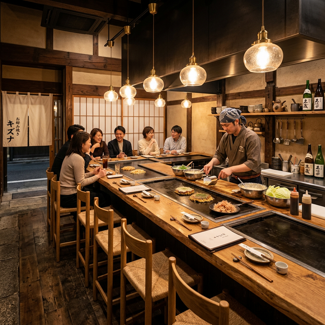
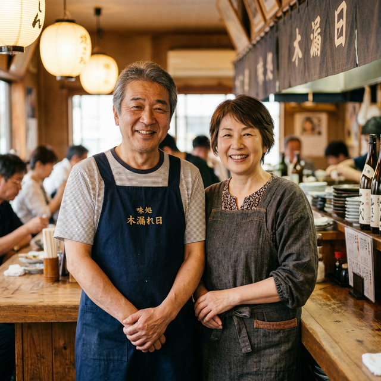

加古川で、
本物の
お好み焼きを。
OPEN 11:30 - 21:00
070-1828-0103夫婦ふたりで、毎日焼いています。
変わらない暖かさと、いつもの美味しさを。
みちのこだわりOur Commitment
鉄板焼きの妙
分厚い鉄板で一気に焼き上げることで、外はカリッと、中はふんわりとした食感に仕上げています。
こだわりの素材
厳選したキャベツや豚肉など、毎日新鮮な素材を仕入れ、素材の味を最大限に引き出します。
くつろぎの空間
お一人様でも、ご家族でもお気軽にお越しいただけるよう、清潔で温かみのある店内を心がけています。
メニューMenu


全メニュー、テイクアウト対応しております。お電話で事前にご注文いただくとスムーズです。
店内の雰囲気Interior




「また来たい」と
思ってもらえるお店に。
加古川の地で長年、お好み焼きと向き合ってきました。
美味しいものを食べて笑顔になってほしい。そのシンプルな想いで、夫婦ふたり毎日鉄板の前に立っています。
アットホームな雰囲気で、皆様のお越しを心よりお待ち申し上げております。
店主
お客様の声Reviews
Googleに寄せられた口コミを一部ご紹介します。
評価 4.5 ★★★★★ (46件)
すなS
9 か月前
夫婦で金曜の夜に伺いました。清潔感のある店内で雰囲気も落ち着いており、とても居心地が良かったです。お好み焼きもふっくらしていて美味しかった！
ローカルガイド
1 か月前
綺麗なお店で居心地よかったです！夫婦で経営してるんかなぁーなんか羨ましいなぁー仲良くお店とかやってみたいですね！ごちそうさまでした🎵
アクセス・店舗情報Access
| 店舗名 | みち |
|---|---|
| 住所 | 〒675-0105 兵庫県加古川市平岡町2-15 |
| 電話番号 | 070-1828-0103 |
| 営業時間 | 11:30 - 21:00 (L.O. 20:30) |
| 定休日 | 不定休（お問い合わせください） |
| 予算 | 1人あたり ¥1,000〜2,000 |
テイクアウトのご注文はお電話で
事前にご注文いただくと、できたてをお待たせせずにお渡しできます。
お気軽にお電話ください。